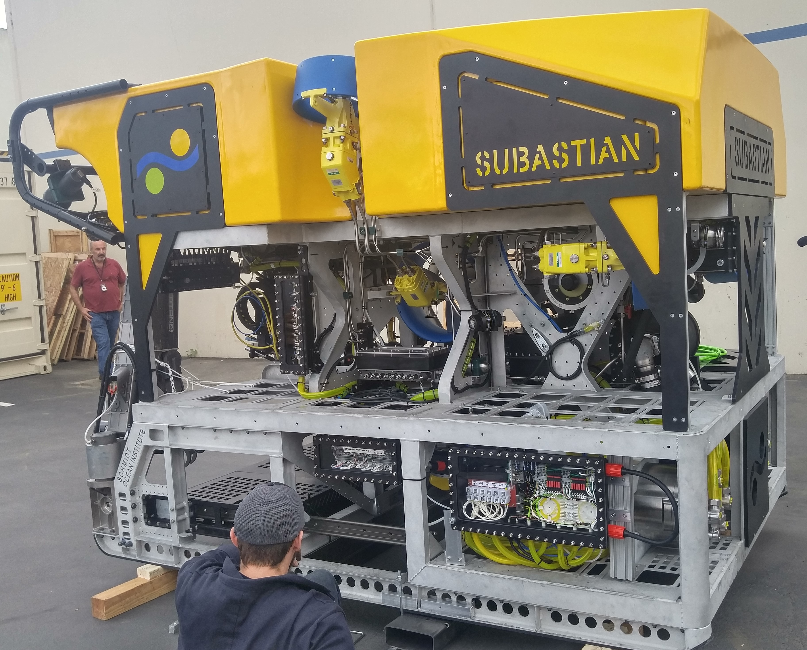
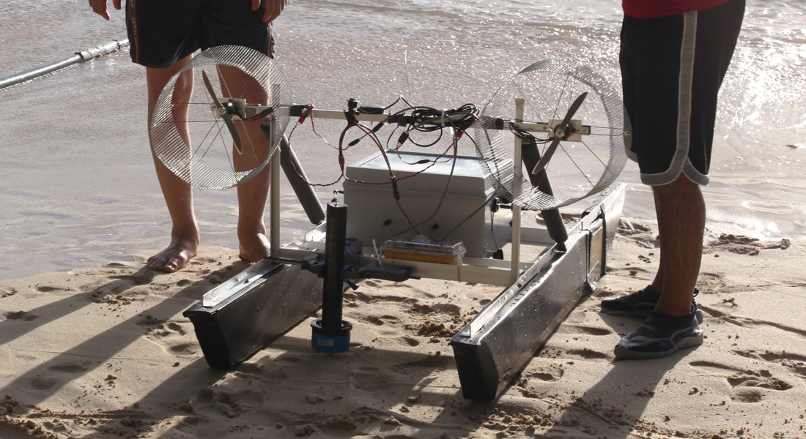
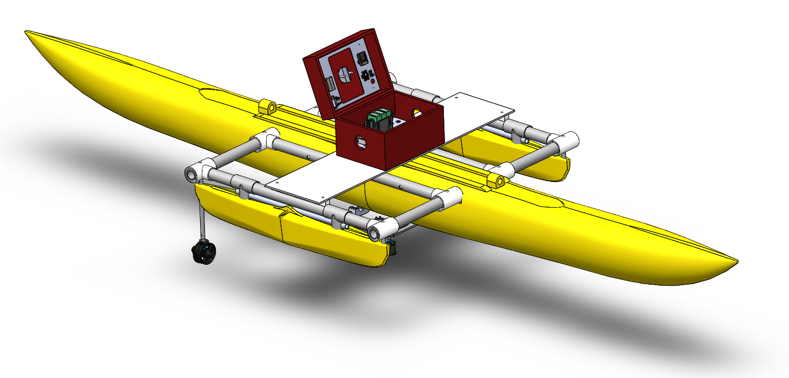
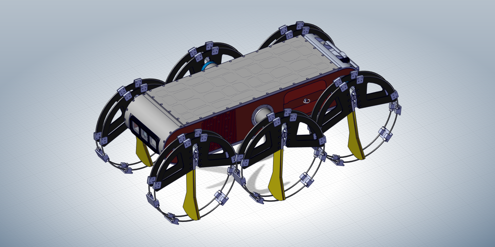
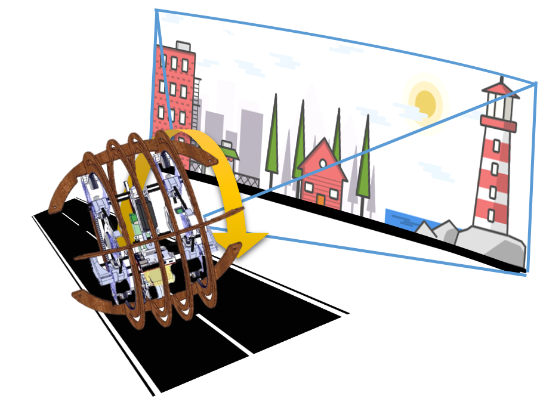
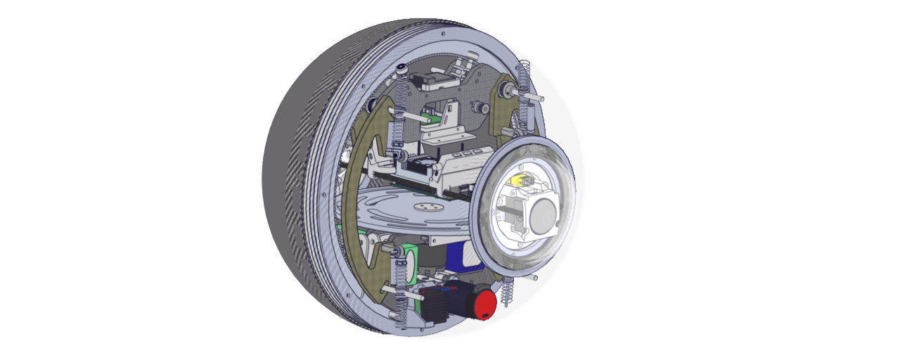

Subsea roboticsFEA
Schmidt Ocean Institute
Subsea robotic hardware development focused on pressure enclosure design support, robotic arm mount design, and simulation-driven structural validation.
Each project page is structured like field documentation: what the system needed to do, how it was built, what broke, what worked, and what the platform taught in deployment or research use.


Subsea robotic hardware development focused on pressure enclosure design support, robotic arm mount design, and simulation-driven structural validation.

Autonomous surface vessel for environmental monitoring, subsurface measurements, and robust field deployment.
Autonomous airboat platform built for shallow marine inspection, exploration strategy testing, and coverage behavior.

A walking and swimming robotic platform exploring multi-mode aquatic locomotion above and below the surface.

Laser-cut and 3D-printed spherical robot architecture designed as a fast, practical research platform.

Visually guided spherical robot for hazardous environments where contamination tolerance and protected architecture are critical.
The About and Resume pages pull these systems back into the wider engineering profile, toolchain, and research-facing work.